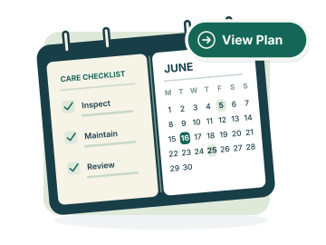

H1 · SELECTED
Handyman Requests
Your chosen camera illustration.
SURFSIDE · MAINTENANCE PLANS
Based on your example, with H1’s palette, dark outlines, slight tilt, sage backing, and green overlay. Each option is paired with the selected H1.
Closest to your reference: clear binding rings, a month name, weekday labels, and actual date numbers.
Your chosen camera illustration.
The checklist and calendar share one dark frame, like two pages of a single care plan.
Your chosen camera illustration.

Twelve month tiles make the yearly-maintenance idea more explicit.
Your chosen camera illustration.

H1 and the Homes page are unchanged. These are separate M1 studies for selection and refinement.